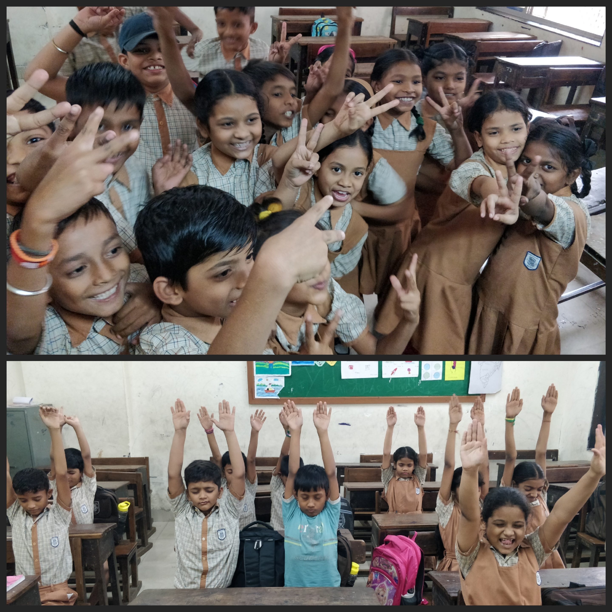

PS
Designed by Prashil Shah
Download Resume

ABOUT ME
I graduated as a CS Major from TEC, and I am currently working as a Full Stack Developer at an ERP System Company. I am a Web Developer and Data Science enthusiast and am currently looking for any projects in the web development and business analytics field. I am familiar with a variety of languages like C#, Python and JavaScript, and frameworks including .NET (MVC/Core), Angular 14+. More details about my work experience are available here
I am skilled at:
- Programming languages such as C#, JavaScript, Python, SQL, and MongoDB
- Backend development using .NET Framework (MVC) and .NET Core
- Modern web application development with Angular 14, Blazor, and Node.js
- Building and consuming services using Web API and WCF
- Creating rich UI components with Telerik Kendo UI and generating reports using Telerik Reporting
- Version control and source code management with Git and Bitbucket
- Task and workflow management using JIRA
I am working on:
- Python for Data Science
- R for Data Science
- Developing my own applications for daily usage:
See more in upcoming projects present here
See more in upcoming projects present here
MY WORK EXPERIENCE
-
Full Stack Developer at Turgajo Technologies | CURRENT PROFILE
Turgajo Technologies is a product-driven software development firm operating under Expert Service Solution Inc. (ESS), dedicated to building advanced ERP and mobile applications for a range of industries. As a full stack developer, my role involves designing and implementing scalable, high-performance features for their newly built ERP system. I work daily on debugging issues, analyzing new requirements, and developing solutions to meet evolving business needs.
-
Senior Software Engineer at Tech Mahindra | August 2022 - September 2023
At Tech Mahindra, I worked with Applied Materials, a global leader in materials engineering solutions used in the production of nearly every advanced chip and display in the world. During my time on the project, I played a key role in enhancing the overall performance and reliability of the application by introducing improvements that made it faster and more user-friendly. I also helped streamline the development and release process, making it easier to deliver updates consistently. Additionally, I supported efforts to modernize the system by contributing to its transition to a more flexible and future-ready platform.
-
Systems Engineer at Tata Consultancy Services | July 2019 - August 2022
At Tata Consultancy Services (TCS), I collaborated with Bank of America on enhancing internal tools and systems used across various teams and applications. I helped develop and improve a shared framework to make application development more efficient and consistent. My work also involved simplifying how different parts of the system worked together, making it easier for teams to use common tools and resources. Additionally, I supported efforts to modernize the way applications were built and deployed, contributing to a more streamlined and adaptable technology environment.
PROJECTS
-
Timesheet Manager
C# • MVC • SQL- Led the end-to-end development of a custom in-house Timesheet Management System using MVC in C#, enabling employees to log hours, assign tasks, and monitor daily progress.
- Implemented Role-Based Access Control (RBAC) to ensure secure workflows and user-specific feature access for employees, managers, and administrators.
- Built interactive dashboards and analytics to track project productivity, resource utilization, and billable vs. non-billable hours.
- Streamlined approval flows and timesheet validation to enhance managerial oversight and reduce administrative overhead.
-
Mobile Office Manager (MOM)
C# • .NET Core • Blazor- Architected and developed a next-generation ERP solution tailored for elevator companies using .NET Core, Blazor, and microservices, modernizing legacy .NET systems.
- Utilized Telerik Blazor UI components to build dynamic, responsive interfaces with a consistent enterprise-grade design.
- Integrated caching mechanisms and service optimization to significantly improve application load time and runtime efficiency.
- Led the transition from monolithic architecture to a modular, scalable system aligned with modern enterprise standards.
- Maintained the existing legacy ERP while driving adoption of the new solution across internal teams.
-
AMAT Home
TS • Angular 15 • MongoDB- Improved UI responsiveness and load performance by implementing lazy loading, resulting in a 3-second reduction in initial page load time.
- Built and maintained a robust CI/CD pipeline using Jenkins, automating testing, builds, and deployment for seamless delivery.
- Played a key role in migrating critical on-premises application components to the OpenShift Container Platform (OCP) to facilitate cloud-native transformation.
- Optimized frontend and backend coordination for enhanced real-time data interactions.
-
Merrill Lynch Integration Framework (MLIF)
C# • AJAX • .NET Framework 4.8- Contributed to the enhancement and maintenance of a reusable .NET-based internal integration framework, leveraged by multiple enterprise applications.
- Unified the security and integration layers into a consolidated library, reducing setup complexity and streamlining developer onboarding.
- Used .NET Core 5 to containerize framework-dependent services, enabling smoother deployment and scaling across environments.
- Provided ongoing technical support and framework improvements based on internal team feedback and changing business requirements.
-
Personal Website
HTML • CSS • JS- First iteration of my personal website. Designed and developed with a conscious effort to avoid using any superfluous frameworks like Bootstrap.
-
Plug-in Based Image Processing Framework - Minor Project | Undergraduate Degree
Python • NumPy- Developed a full-stack console-based application in Python to visualize and edit images using a modular plug-in architecture.
- Implemented dynamic plug-in support allowing users to apply custom transformations and filters at runtime based on individual use cases.
- Leveraged scikit-image and NumPy libraries to perform image segmentation, geometric transformations, color space conversions, and more.
- Designed a user-interactive interface to select and apply different image processing pipelines based on real-time input scenarios.
-
Other projects I have created:
- Web Scraper in python using the BeautifulSoup library
- Student - Volunteer Progress Tracker | Child Rights and You (CRY)
-
Work in progress:
- List tracker - An application to keep track of all the things you take when moving elsewhere/ travelling.
- Alarm Clock with tasks - An alarm clock that will not stop ringing until assigned task is completed.

SOCIAL WORK
CRY – A Cause Worth Fighting For
Since my second year of engineering, I have been closely associated with CRY (Child Rights and You)—an organization that stands as a beacon of hope for underprivileged children across India. What began as a volunteering opportunity turned into a deep, ongoing commitment to shaping a better world, one child at a time.
For over four years, I actively participated in CRY’s initiatives—primarily teaching English and Math to children from nearby government schools who struggled with basic concepts. We believed that a strong foundation in education could pave the way for a lifetime of confidence and opportunity.
Beyond academics, our team organized several awareness drives within the community. These included campaigns on cleanliness and civic responsibility, the importance of education, and even sensitive topics like good touch and bad touch—ensuring children were not only informed but also empowered to protect themselves.
Even today, I remain affiliated with CRY, contributing to their workshops and events whenever possible. These experiences have shaped my perspective deeply, and they continue to inspire my belief in the power of compassion, community, and consistent effort.